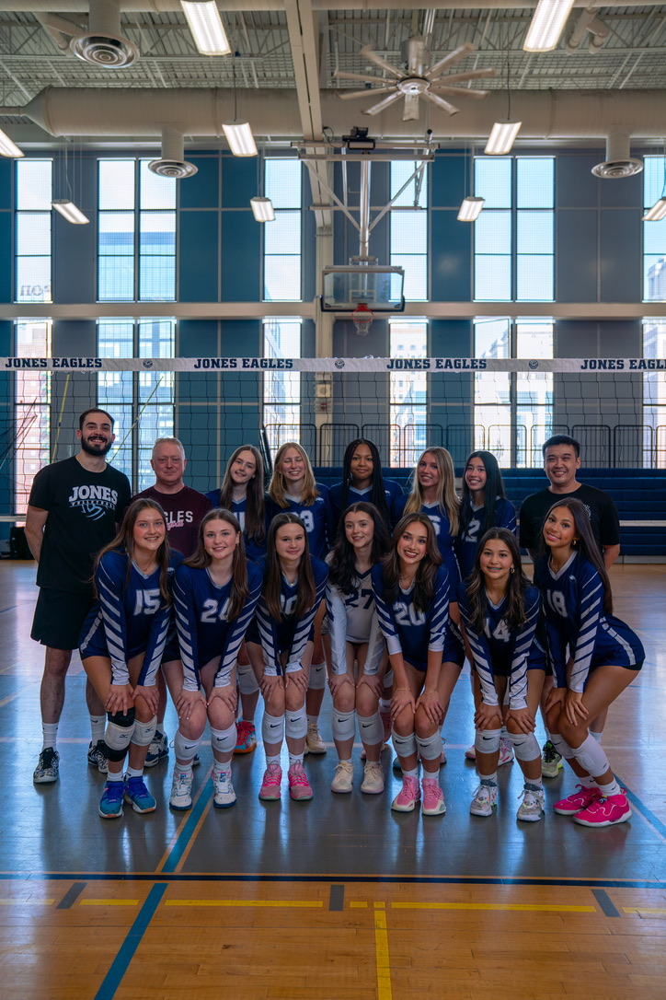

Volleyball Profile

About the Sport
Essentially, volleyball is a fast-paced sport where two teams compete to score points by preventing the ball from touching the ground on their side of the court.
The Basics
- Teams: six players on the court per side
- Goal: Have the ball hit the ground on the opponent's side
- Contacts: each team gets up to three touches before sending the ball over the net
- Scoring: every time a team fails to return the ball, the other team gets a point. A set ends at 25 points and a game is won best out of 3 sets
Positions
- Setter: Sets up the ball for the attackers to hit
- Outside hitter: Hits the ball from the left side of the court
- Opposite hitter: Hits the ball from the right side of the court
- Defensive specialist: Focuses on passing and defense
- Middle blocker: Focused on blocking balls from the other team but also is an attacker
- Libero: Specializes in defense and wears a separate color jersey
Key Skills
- Serve
- Pass
- Set
- Spike/Attack
- Block
Why I Like Volleyball
I love volleyball because it gives me something to work towards and helps me stay motivated. Also simply playing the sport is fun and one of my favorite ways to spend my time. I am lucky to have amazing teammates and coaches who make this sport so enjoyable.